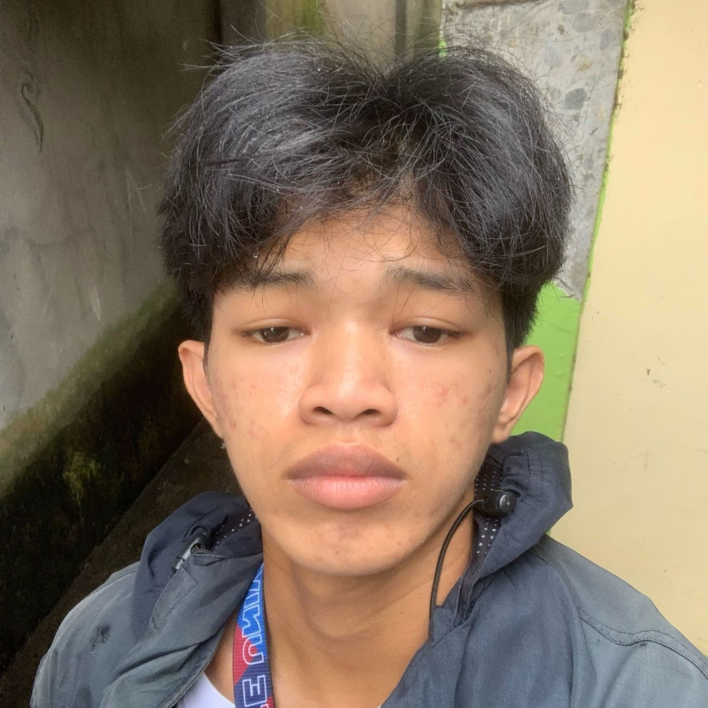

About Me
I am a first year Computer Science student, I live in Pinamihagan lagonoy Camarines sur. I am a person who loves exploring things specially in the field of technology. My journey in the field of technology id driven by curiosity and the urge to continue to improve my abilities.
Involvement in Organization
-
Society of Programmers and Enthusiasts in Computer Science
Partido State University
2024 - 2025
-
Peer Facilitator(Mental health advocate)
Partido State University2024 - 2025
Training Attended
- Robotics training camp in San Roque Lagonoy
- Boy Scout training 2015 in Amoguis and Tigaon